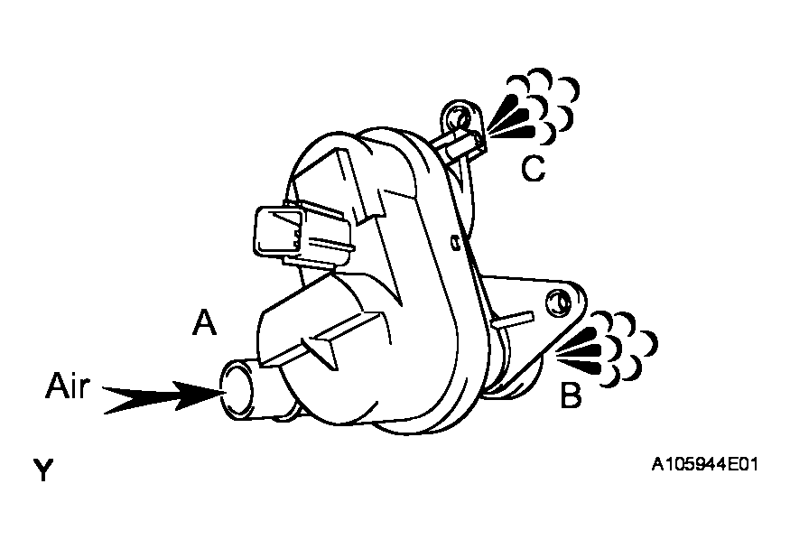

Emission Control: Canister: Inspection
- INSPECT CANISTER
- Visually check the canister for cracks or damage. If cracks or damage are found, replace the canister.
- Check the canister operation.
- While holding the purge port closed, blow air 0.39 kPa (4.0 kgf/cm2
, 3 mmHg) into the vent port, and check that air flows from the air inlet port.
If the result is not as specified, replace the canister.
- While holding the air inlet port closed, blow air 0.39 kPa (4.0 kgf/cm2
, 3 mmHg) into the vent port, and check that air flows from the purge port.
If the result is not as specified, replace the canister.
- While holding the air inlet port closed, apply vacuum 3.43 kPa (35.0 kgf/cm2
, 25.7 mmHg) to the vent port, and check that air is sucked into the purge port.
If the result is not as specified, replace the canister.
- While holding the purge port closed, blow air 0.39 kPa (4.0 kgf/cm2
, 3 mmHg) into the vent port, and check that air flows from the air inlet port.
- Check the air tightness.
- While holding the vent and air inlet ports closed, apply vacuum 3.43 kPa (35.0 kgf/cm2
, 25.7 mmHg) to the purge port, and check that the vacuum is maintained for 1 minute.
If the result is not as specified, replace the canister.
- While holding the vent and air inlet ports closed, apply vacuum 3.43 kPa (35.0 kgf/cm2
, 25.7 mmHg) to the purge port, and check that the vacuum is maintained for 1 minute.
- Check the diaphragm.
- Remove the air hose between ports A and B.
- While holding the vent, purge and air inlet ports closed, apply vacuum 1.42 kPa (14.5 kgf/cm2 , 10.6 mmHg) port A, and check that air is not sucked into port B.
- While holding the vent, purge and air inlet ports closed, apply vacuum 1.42 kPa (14.5 kgf/cm2
, 10.6 mmHg) into port A, and measure how long it takes for the vacuum to drop.
Vacuum drop time: 10 seconds or more
If the result is not as specified, replace the canister.
- Check leak detection pump.
- Check that air flows from port A to port B and C.

Courtesy of © TOYOTA, LICENSE AGREEMENT TMS1002If the result is not as specified, replace the canister.
- Connect the positive (+) lead of the battery to terminal 7 and the negative (-) lead to terminal 6.
- Check that the valve is closed.
If the result is not as specified, replace the canister.
- Install the canister pump module.
- Check that air flows from port A to port B and C.